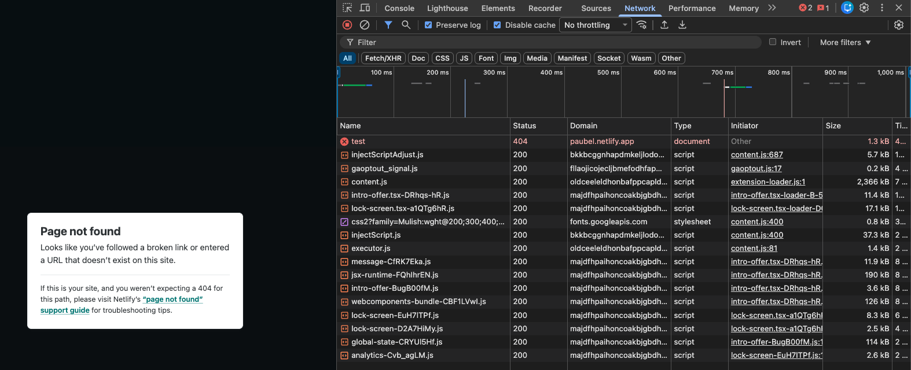

Modul 6
Kap 6.4 - Prestanda och enkel felsökning
En snabb sida är lättare att använda, särskilt på mobil och långsamma nät.
Mål
- Hitta tunga filer med Network-panelen.
- Förstå vanliga orsaker till långsam laddning.
- Använda Lighthouse som stöd, inte som facit.
- Felsöka saknade filer och fel sökväg.
Network-panelen
Network-panelen visar vilka filer sidan laddar, hur stora de är och om någon fil saknas. En röd 404 betyder ofta fel sökväg eller fel filnamn.

404. Till vänster syns resultatet: sidan kunde inte hittas.Öppna utvecklarverktygen
Med utvecklarverktygen menas verktygen som öppnas när du väljer Inspektera i Chrome. De kallas också DevTools. Det är webbläsarens verktyg för att undersöka hur en sida är byggd, vilka filer som laddas och vilka fel som finns.
En enkel väg är att högerklicka på sidan och välja Inspektera. Du kan också öppna samma verktyg med F12 eller Ctrl + Shift + I. På Mac fungerar oftast Cmd + Option + I.
När verktygen öppnas ser du flera flikar. I det här kapitlet använder du framför allt Elements, Console, Network, Lighthouse och mobilvyn.
Guide: hitta saknade filer med Network
- Öppna sidan i webbläsaren.
- Öppna utvecklarverktygen.
- Gå till fliken Network.
- Ladda om sidan med Cmd + R eller Ctrl + R.
- Titta i kolumnen Status. En fil med
404hittades inte. - Klicka på filen och kontrollera sökvägen. Jämför med mappnamn, filnamn, stora och små bokstäver och filändelse.
Om bilden heter bild.webp men HTML-koden säger Bild.webp kan det fungera lokalt på vissa datorer men gå sönder på en webbserver. Var noggrann med exakt samma namn.
Guide: hitta stora filer med Network
- Öppna fliken Network.
- Ladda om sidan.
- Klicka på kolumnen Size för att sortera efter filstorlek.
- Leta efter stora bilder, videor, ljudfiler eller externa inbäddningar.
- Klicka på en fil och kontrollera filtyp, storlek och laddningstid.
Om en bild är mycket större än den behöver vara kan du gå tillbaka till kapitel 6.2 och ändra pixelstorlek, komprimera bilden eller välja ett bättre format.
Guide: testa utan cache
Webbläsaren sparar ofta filer i cache. Det gör sidan snabbare, men kan också göra felsökning förvirrande eftersom du ibland ser en gammal version av en fil.
- Öppna utvecklarverktygen.
- Gå till Network.
- Kryssa i Disable cache.
- Låt utvecklarverktygen vara öppna.
- Ladda om sidan.
Nu hämtar webbläsaren filerna på nytt medan DevTools är öppet. Det är användbart när du har ändrat CSS, bilder eller JavaScript men sidan verkar visa gammalt innehåll.
Vanliga prestandaproblem
- För stora bilder.
- För många externa inbäddningar.
- JavaScript som laddas i onödan.
- Filer som saknas och ger 404.
Lighthouse
Lighthouse kan ge tips om prestanda, tillgänglighet och bästa praxis. Använd resultatet som en startpunkt för felsökning och kontrollera själv vad som faktiskt påverkar sidan.
Guide: kör Lighthouse
- Öppna utvecklarverktygen.
- Gå till fliken Lighthouse. Om du inte ser den kan den ligga bakom fler-flikar-menyn.
- Välj vilka kategorier du vill testa, till exempel Performance, Accessibility och Best Practices.
- Välj om sidan ska testas som mobil eller desktop.
- Klicka på Analyze page load eller motsvarande knapp.
- Läs rapporten, men ändra inte allt på en gång. Välj ett konkret problem och testa igen efter ändringen.
Lighthouse kan ge olika resultat från gång till gång. Det beror bland annat på datorn, nätverket, cache och vilka externa tjänster sidan laddar.
Guide: kontrollera Console
- Öppna utvecklarverktygen.
- Gå till fliken Console.
- Ladda om sidan.
- Leta efter röda felmeddelanden.
- Läs filnamn och radnummer om de visas.
Vanliga fel i Console är att en JavaScript-fil saknas, att ett element inte hittas eller att koden körs innan sidan har laddats klart.
Guide: kontrollera HTML och CSS med Elements
- Högerklicka på något på sidan och välj Inspektera.
- Fliken Elements öppnas och markerar HTML-elementet.
- Titta på HTML-strukturen till vänster.
- Titta på CSS-reglerna till höger.
- Testa att slå av och på CSS-regler för att se vad som påverkar layouten.
Elements är bra när något ligger fel, har fel färg, inte får rätt bredd eller påverkas av en CSS-regel du inte väntade dig.
Guide: testa mobilvy
- Öppna utvecklarverktygen.
- Klicka på ikonen för mobil/surfplatta, eller tryck Cmd + Shift + M på Mac och Ctrl + Shift + M på Windows.
- Välj en smal bredd eller dra i sidans kanter.
- Kontrollera att text, bilder, video, navigation och formulär fortfarande fungerar.
- Testa också bred desktopvy igen efteråt.
En sida kan se bra ut på din skärm men ändå vara svår att använda på mobil. Testa därför både smal och bred vy.
Felsök i ordning
- Kontrollera konsolen för fel.
- Kontrollera Network för saknade eller stora filer.
- Testa sidan i smal och bred viewport.
- Ändra en sak i taget och testa igen.
Exempel på felsökning
Om en bild inte visas kan du felsöka så här:
- Inspektera bilden i Elements och läs vad som står i
src. - Öppna Network och ladda om sidan.
- Leta efter bildfilen. Om status är
404hittas inte filen. - Kontrollera om filen ligger i rätt mapp.
- Kontrollera om filnamnet, filändelsen och stora/små bokstäver stämmer.
- Ändra en sak, ladda om och kontrollera igen.
Checklista innan publicering
- Inga röda fel i Console.
- Inga saknade filer med status
404i Network. - Bilder och media har rimlig filstorlek.
- Sidan fungerar i mobilvy.
- Lighthouse ger inga problem du enkelt kan åtgärda.
- Du har testat efter att cache är avstängd eller efter en hård omladdning.
Övningar
Förbered arbetet
- Skapa en mapp som heter
kap 6-4i din mappWebbutveckling 1. - Öppna bara mappen
kap 6-4i Visual Studio Code via Arkiv → Öppna mapp. - Skapa
ovn6-4.html. Gör båda övningarna i samma fil, i varsin del av sidan. - Skriv CSS i ett
<style>-element inuti<head>. Om du skapar fler än en HTML-sida ska du i stället använda en extern CSS-fil, till exempelstyle.css, som du länkar från varje sida. - Använd nedladdningslänkarna i övningarna. Om en fil öppnas i webbläsaren, välj Spara bild som eller spelarens nedladdningsalternativ. Behåll filnamnen och spara filerna i den undermapp som anges.
Övning 1: Hitta och rätta saknade filer
Bygg en liten testsida och använd Network för att hitta två avsiktliga fel.
- Ladda ner dog.jpg – brun hund mot mörk bakgrund till
bilder. Skapa också en undermappjsmedmain.jsoch skrivconsole.log("Filerna fungerar");där. - Bygg en fullständig HTML-sida med rubrik och hundbild. Använd
src="bilder/dog.jpg"och beskrivande alt-text. Kopplajs/main.jsmeddefer. Kontrollera först att sidan fungerar. - Öppna sidan med Live Server, så att adressen börjar med
http://. Ändra sedan tillfälligt bildsökvägen tillbilder/saknas.jpgoch skriptsökvägen tilljs/saknas.js. - Öppna Network, välj Disable cache och ladda om med DevTools öppet. Leta upp förfrågningarna som misslyckas och läs deras status och fullständiga sökvägar. Kontrollera även Console.
- Rätta ett fel i taget i VS Code och ladda om efter varje ändring. Skriv på sidan vilka två fel du skapade, vad Network visade och hur du rättade dem.

Kontrollera och förklara: Slutversionen ska visa bilden och konsolmeddelandet utan saknade filer. Förklara vad status 404 betyder och varför ändringar i Elements måste föras över till källfilen för att sparas.
Övning 2: Mät en förbättring med Network och Lighthouse
Fortsätt i samma HTML-fil och dokumentera hur en konkret ändring påverkar sidan.
- Öppna hundbilden från övning 1 i ett bildverktyg och exportera en PNG med samma dimensioner, 400 × 267 pixlar. Spara som
bilder/hund-stor.png. Exportera även en komprimerad WebP sombilder/hund-optimerad.webp. Jämför filstorlekarna; välj en WebP-inställning som ger en mindre fil med acceptabel kvalitet. - Använd först PNG-filen som sidans bild. I Network: stäng av cache, ladda om och anteckna bildens överförda storlek. Kör en Lighthouse-rapport för mobil och anteckna ett konkret fynd eller en kontroll som sidan klarar.
- Byt bildens src till WebP-filen utan att ändra dess visningsstorlek. Ladda om under samma förhållanden och jämför överförd storlek. Skriv hur många kB du sparade.
- Kör Lighthouse igen med samma inställningar. Välj en relevant rekommendation om någon finns och kontrollera den mot din kod. Om rapporten inte ger något lämpligt förbättringsförslag, dokumentera det och förklara ändå bildbytet utifrån Network-mätningen.
- Testa sidan vid cirka 375 och 1200 pixlars bredd. Undersök bildens CSS i Elements och rätta eventuella breddproblem i VS Code. Lägg en före- och eftertabell på sidan med filnamn, storlek och din slutsats.
Kontrollera och förklara: Inga filer ska saknas och sidan ska fungera i båda bredderna. Bedöm förbättringen utifrån den mindre överföringen och bibehållen bildkvalitet; en så liten sida behöver inte få ett högre Lighthouse-poängtal.